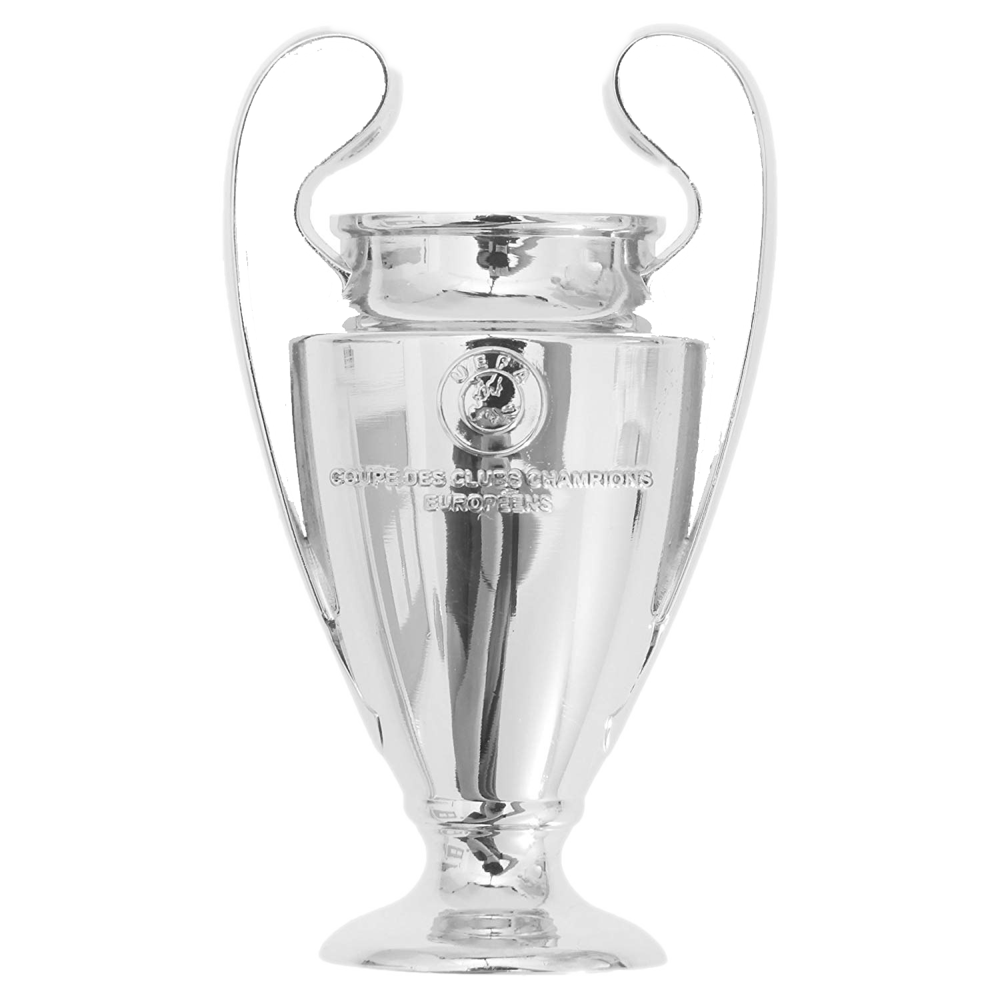
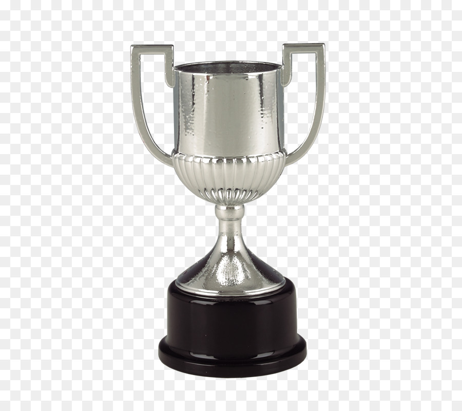
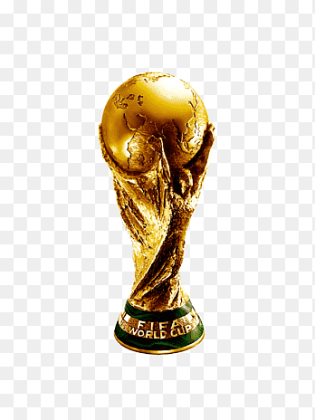
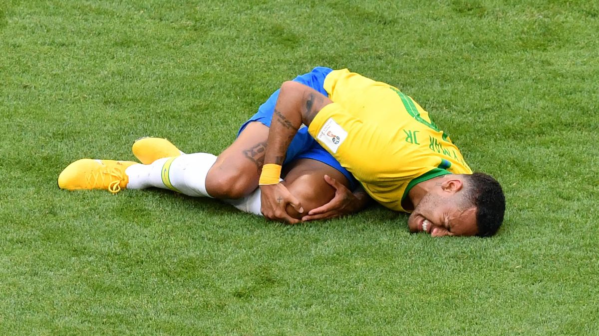
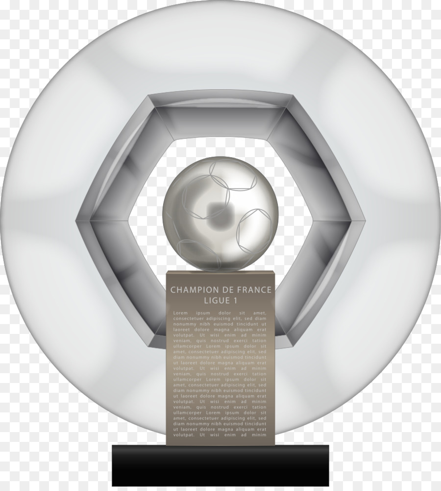
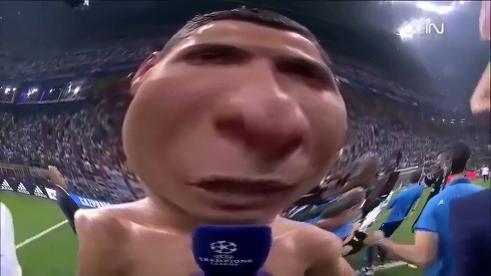
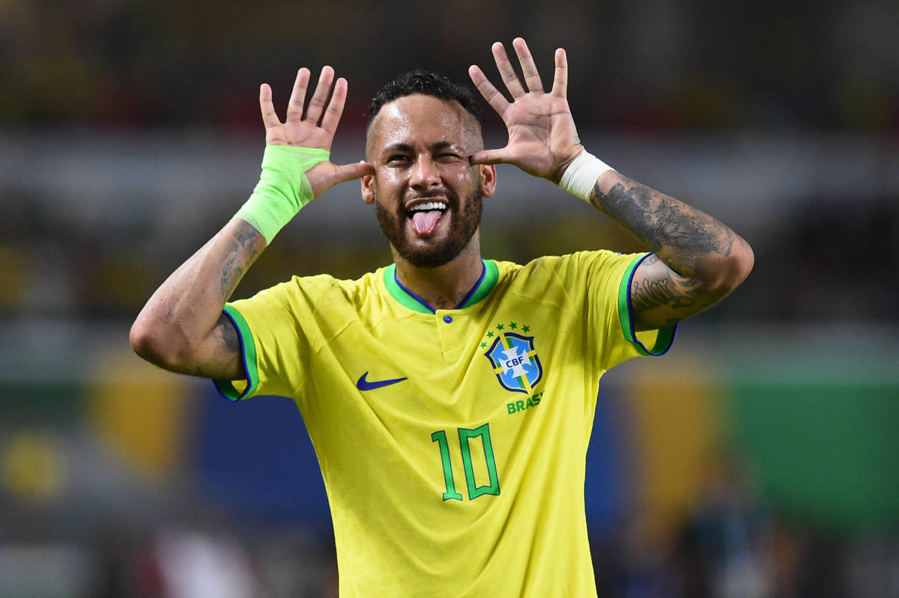
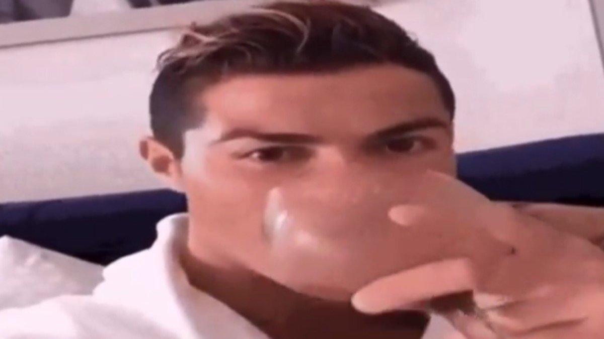
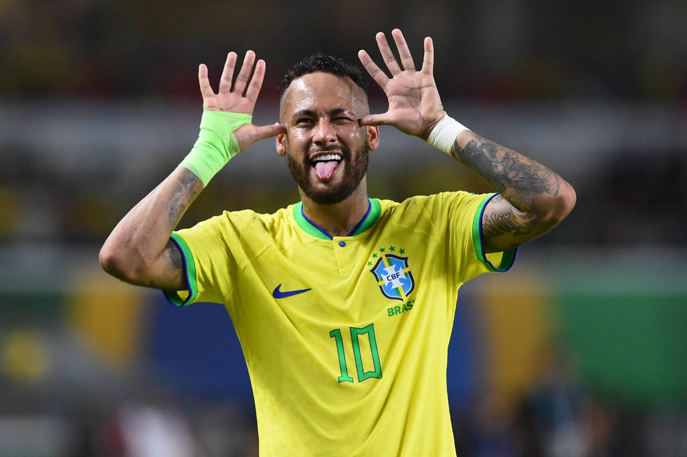
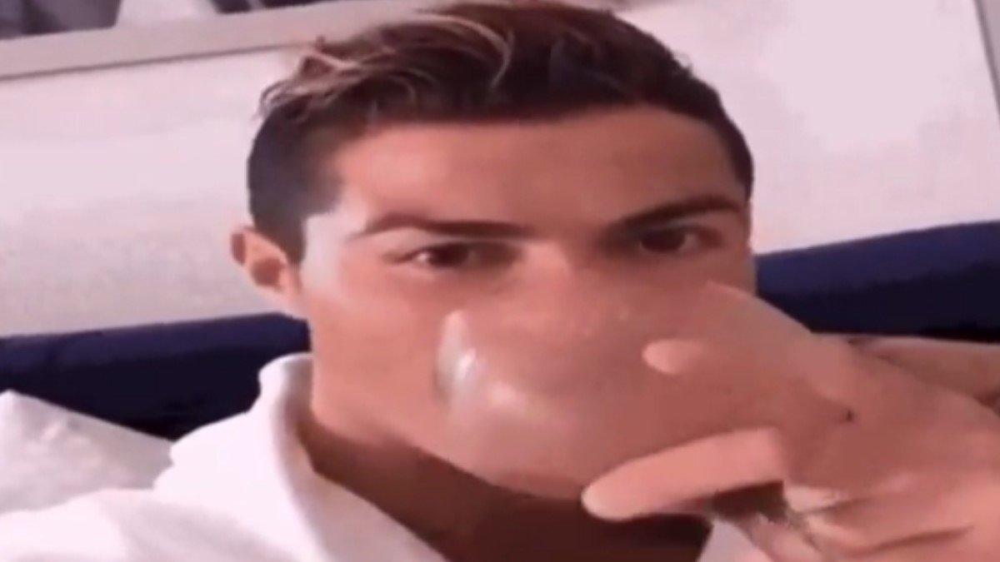

As seen in the trailer, "Messi Meets America" takes viewers on the pitch to witness Inter Miami's Leagues Cup title and beyond. From his incredible last-minute game-winning goal in his very first match, to selling out record crowds across the USA, to moments with his teammates, the series follows Leo's immersion in America alongside the remarkable journey and transformation of Inter Miami CF

x4

x7

x1

Neymar
As seen in the trailer, "Messi Meets America" takes viewers on the pitch to witness Inter Miami's Leagues Cup title and beyond. From his incredible last-minute game-winning goal in his very first match, to selling out record crowds across the USA, to moments with his teammates, the series follows Leo's immersion in America alongside the remarkable journey and transformation of Inter Miami CF
x1
x2

x5

Cristiano SUUIIII
The second part of this story had a twist. With an assist to his credit, all that was missing was a goal for Cristiano, and he had all kinds of shots.Al-Tai goalkeeper Victor Braga was making life miserable for the Portuguese, who was getting desperate with every save from the Brazilian.The former Real Madrid man once again praised the Saudi league. "We have great players.
 


